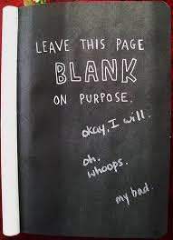

This website was created by Matthew Adlam with the purpose of informing the public on attractions and things to do, (and getting excellence on my internal). This website has all the required parameters to get excellence, where also being informative, well stlyed and verified by CSS and HTML checkers. It suggests information on the pages and links the websites to the articles.
